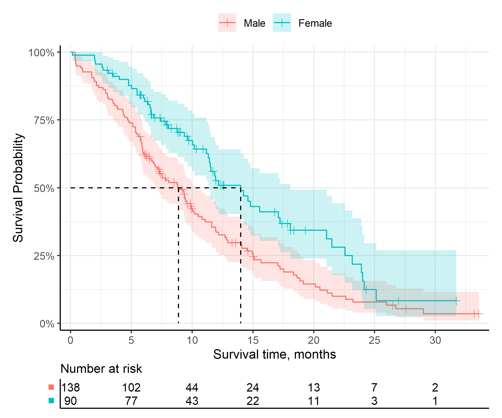
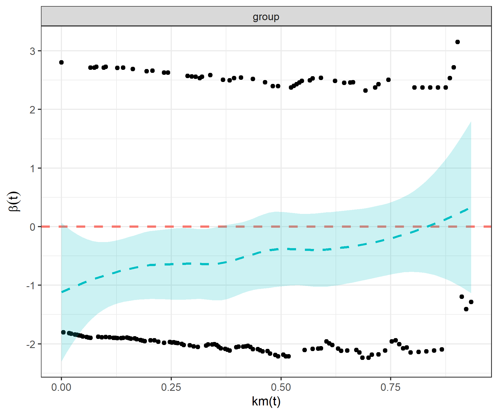
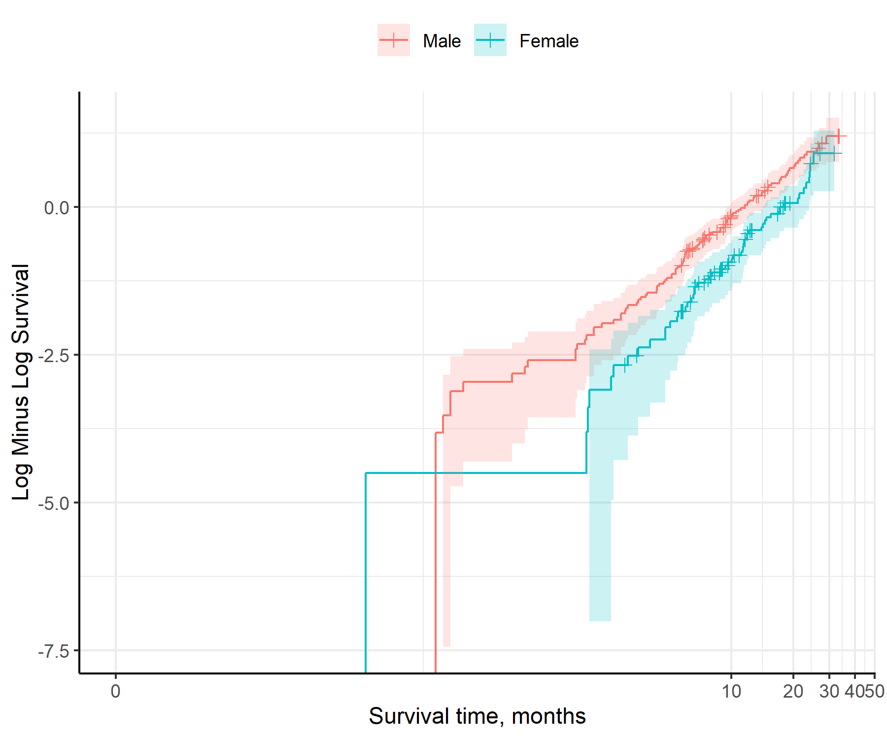
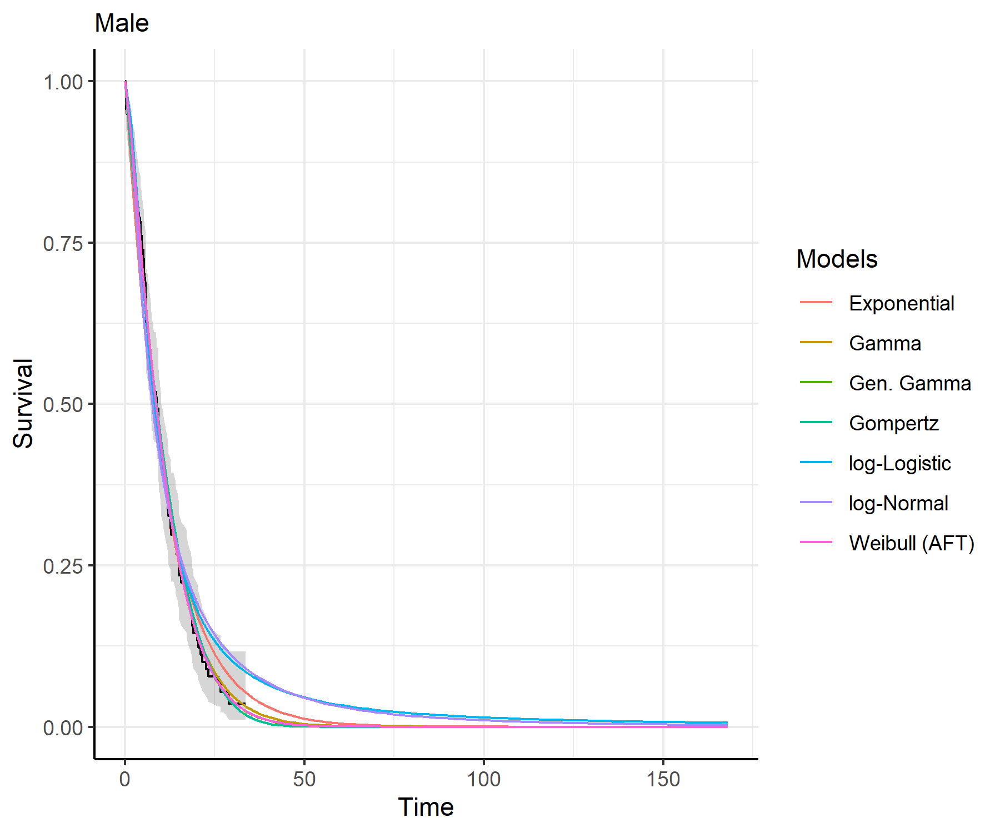
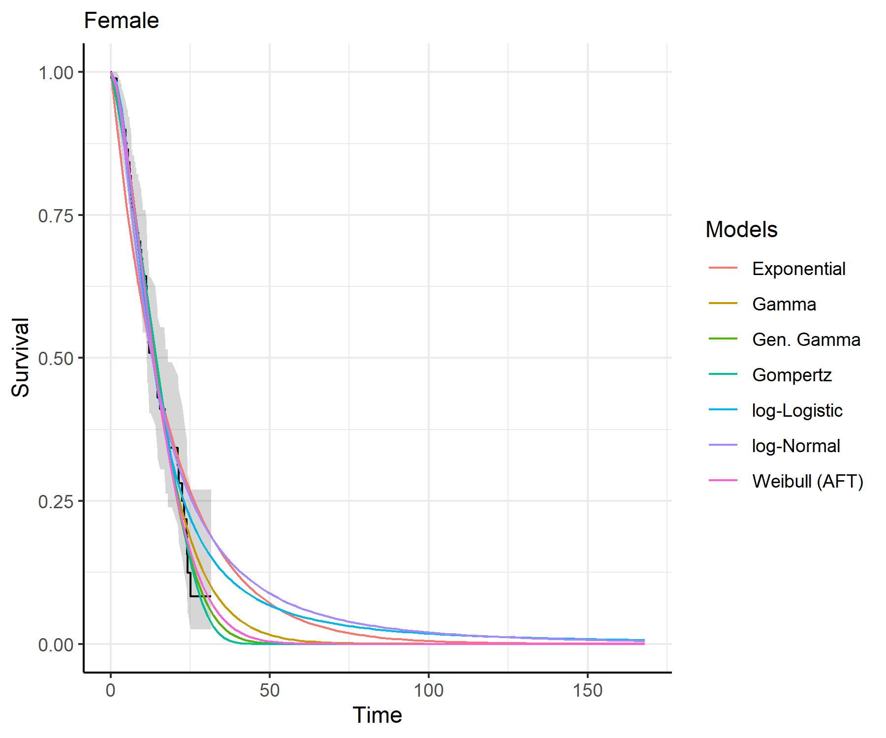
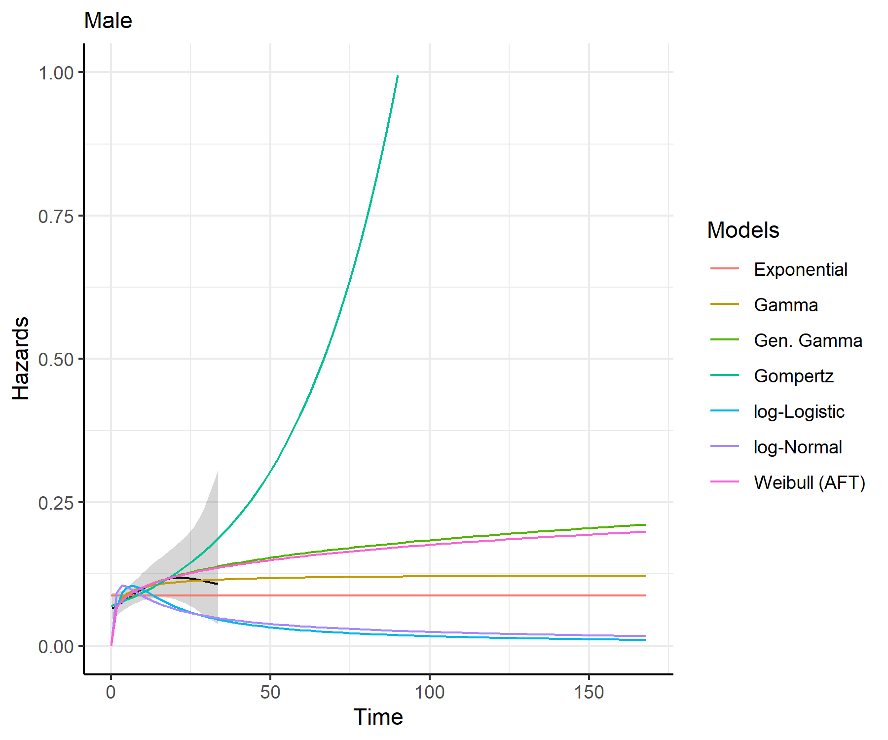
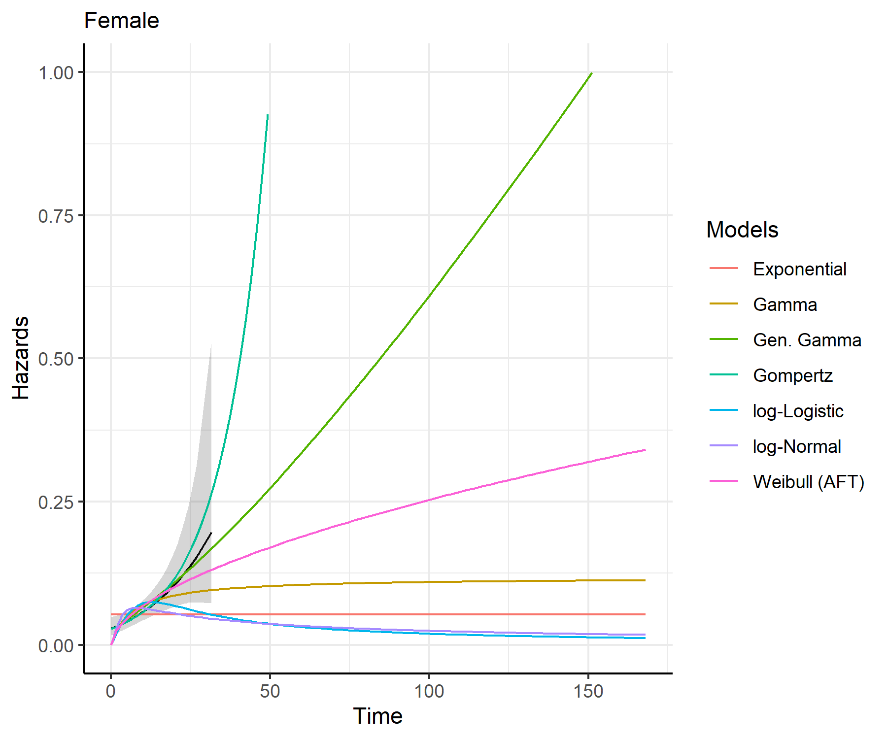

The easysurv R package provides tools to simplify survival data analysis and model fitting.
This includes tools to inspect survival data, plot Kaplan-Meier curves, assess the proportional hazards assumption, fit parametric survival models, predict and plot survival and hazards, and export the outputs to Excel.
For fitting survival models, the package provides a simple interface to flexsurv::flexsurvreg(), flexsurv::flexsurvspline(), flexsurvcure::flexsurvcure(), and survival::survreg().
By default, the package uses the flexsurv engine (flexsurv::flexsurvreg()) and provides a helpful starting point to explore survival extrapolations across frequently used distributions (such as exponential, generalized gamma, gamma, Gompertz, log-logistic, log-normal and Weibull).
Installation
If you haven’t already, install R and consider using RStudio as your integrated development environment (IDE).
# You will need to have the pak package installed.
install.packages("pak")
# Then, install easysurv either from GitHub for the latest version:
pak::pkg_install("Maple-Health-Group/easysurv")
# Or from CRAN for the latest stable version:
pak::pkg_install("easysurv")Getting started
# Attach the easysurv library
library(easysurv)
# Open an example script
quick_start()
## Note: The default file name is "easysurv_start.R", but you can define your own, e.g.
## quick_start("my_file_name.R")
# Access help files
help(package = "easysurv")Examples
Start by tidying your data…
# Load the easy_lung data from the easysurv package
# Recode the "status" variable to create an event indicator (0/1)
surv_data <- easy_lung |>
dplyr::mutate(
time = time,
event = status - 1,
group = sex,
.after = time
) |>
dplyr::select(-c(inst, ph.karno, pat.karno)) # remove some unused columns
# Make the group variable a factor and assign level labels.
surv_data <- surv_data |>
dplyr::mutate_at("group", as.factor)
levels(surv_data$group) <- c("Male", "Female")
inspect_surv_data()
inspect_surv_data(
data = surv_data,
time = "time",
event = "event",
group = "group"
)
get_km()
km_check <- get_km(
data = surv_data,
time = "time",
event = "event",
group = "group"
)
print(km_check)
test_ph()
ph_check <- test_ph(
data = surv_data,
time = "time",
event = "event",
group = "group"
)
print(ph_check)
fit_models()
separate_models <- fit_models(
data = surv_data,
time = "time",
event = "event",
predict_by = "group"
)
print(separate_models)
predict_and_plot()
plots <- predict_and_plot(fit_models = separate_models)
print(plots)